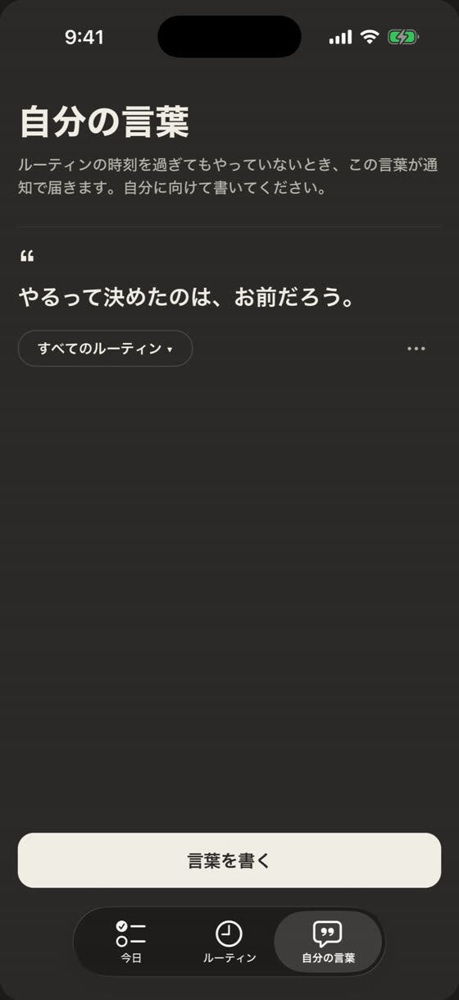
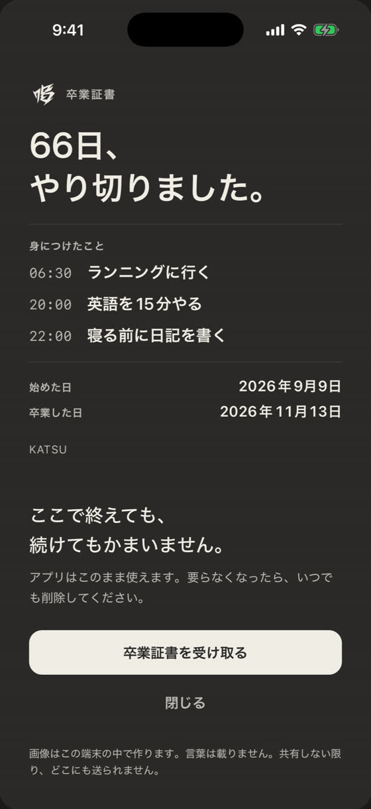

KATSU
English
11月14日 土曜日
20:05
英語を15分やる
やるって決めたのは、お前だろう。
今
この一言は、自分で書いたもの

毎日やることは、3つまで
- 毎日やることを、時刻と一緒に決める
- 時刻を過ぎて忘れているときの自分に、言葉を書く
- 時刻を過ぎてもチェックが付いていないと、その言葉が届く
チェックは通知からも、ホーム画面のウィジェットからも付けられます。

言葉は全部、自分で書く
アプリは一言も書きません。例文もありません。届くのは、決めた日の自分が書いた言葉だけです。
書いた言葉は端末から出ません。送信も解析もしません。

66日やり切ったら、卒業
全部やり切った日が66日になったら卒業です。習慣になったら、アプリを使い続ける必要はありません。
休みは直近7日で2回まで。休んでも、それまでの日数はそのままです。
66日は、ある研究で習慣になるまでの日数の中央値だった数字です(人によって大きな差があります)。
アカウントもクラウドもありません
登録なしで始められます。書いた言葉を送る先のサーバーがありません。アプリを消すと、言葉も消えます。
無料で卒業までできます
ルーティン、チェック、通知、ウィジェット、卒業までは無料です。言葉も3つまで無料で、日替わりで届きます。有料プランでは、言葉を4つ以上持てて、ルーティンごとに違う言葉を出せます。